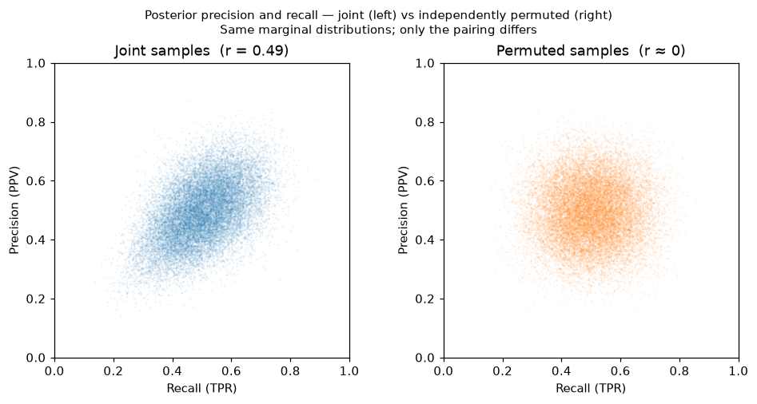

classifier-uncertainty
Bayesian uncertainty quantification for binary classifier metrics.
Implements the approach from Tötsch & Hoffmann (2021): sample the confusion matrix from Beta posteriors, then propagate to any metric. The result is a full posterior distribution over each metric, not just a point estimate.
Installation
pip install classifier-uncertainty
Quick start
from classifier_uncertainty import BinaryClassifier
# From ground-truth labels and classifier scores
bc = BinaryClassifier(y_true, y_score)
# Or from published confusion matrix counts (e.g. from a paper)
bc = BinaryClassifier.from_cm(tp=26, fn=0, tn=6, fp=2)
Threshold metrics
t = bc.at_threshold(0.5) # ThresholdResult — all metrics share the same CM samples
result = t.tpr() # MetricResult
result.point_estimate # posterior mean ≈ 0.963
result.credible_interval() # 95% HPDI ≈ (0.89, 1.0)
result.metric_uncertainty # HPDI length ≈ 0.11
result.plot() # posterior histogram with CI shading
result.samples # posterior samples
Built-in metrics:
| Method | Aliases | Formula |
|---|---|---|
accuracy() |
(TP + TN) / N | |
tpr() |
sensitivity, recall |
TP / (TP + FN) |
tnr() |
specificity |
TN / (TN + FP) |
precision() |
ppv |
TP / (TP + FP) |
npv() |
TN / (TN + FN) | |
f1() |
2TP / (2TP + FP + FN) | |
balanced_accuracy() |
(TPR + TNR) / 2 | |
bookmaker_informedness() |
TPR + TNR − 1 | |
mcc() |
Matthews correlation coefficient |
Because all metrics from the same ThresholdResult share the same underlying CM samples,
their posteriors are joint — not independently drawn. The left panel below scatters
t.tpr().samples against t.precision().samples directly; the right panel permutes
one array to break the pairing while keeping the same marginal distributions:

The elongated cloud on the left cannot be recovered by treating the metrics as independent. This matters when computing joint probabilities (e.g. P(recall > 0.8 and precision > 0.8)) or when propagating uncertainty through any function of multiple metrics.
Custom metrics receive CM entry proportions as numpy arrays, so any ratio metric works directly:
# False discovery rate
t.metric(lambda tp, fn, tn, fp: fp / (tp + fp))
Threshold-agnostic curves
roc = bc.roc_curve() # sweep a quantile-spaced threshold grid
roc.plot() # ROC curve with 95% HPDI band
roc.auc # MetricResult — full AUC-ROC posterior
bc.pr_curve().plot() # Precision-Recall curve with 95% HPDI band
Economic value
# Raw expected cost per observation (hits and false alarms incur cost; misses incur loss)
t.mean_expense(cost=1.0, loss=5.0)
# Relative Value Score (Wilks 2001) — improvement over climatological strategy
# VS = 1: perfect; VS = 0: no better than climatology
t.relative_value(cost_loss_ratio=0.3) # C/L ∈ (0, 1)
t.value_score_curve().plot() # VS over all C/L with credible band
What questions can this answer?
How well is a classifier likely to perform on a new, similar dataset?
t.tpr().point_estimate, t.tpr().credible_interval()
How will performance change if prevalence changes?
t.precision().point_estimate # at observed prevalence
t.at_prevalence(0.05).precision().point_estimate # projected to production
How likely is classifier A better than classifier B on a given metric?
(bc_a.at_threshold().tpr().samples > bc_b.at_threshold().tpr().samples).mean()
How likely is this model more cost-effective than business-as-usual?
(t_model.mean_expense(C, L).samples < t_bau.mean_expense(C, L).samples).mean()
Does this classifier meet my minimum recall requirement?
(t.tpr().samples > 0.8).mean()
Do precision and recall meet requirements simultaneously?
((t.tpr().samples > 0.8) & (t.precision().samples > 0.8)).mean()
Is this classifier better than random guessing?
(t.bookmaker_informedness().samples > 0).mean()
Should I trust this published result?
BinaryClassifier.from_cm(tp=26, fn=0, tn=6, fp=2).at_threshold().tpr().credible_interval()
See Examples for worked examples with visualizations, and API Reference for full documentation.